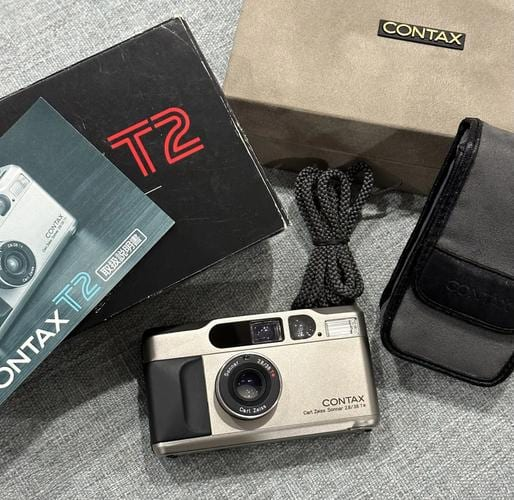

康泰时 Contax T2

钛壳蔡司口袋胶片机，便携机的奢华巅峰。
客观评测
康泰时 T2 于 1990 年发布，钛合金机身配蔡司 Sonnar 38mm f/2.8 T* 镜头，成像锐利、色彩通透。支持 DX 自动识别胶卷感光度（ISO 25-5000），红外自动对焦最近约 0.35 米，TTL 中央重点测光，电子快门 8 至 1/500 秒，内置闪光灯可切换多种模式。机身约 295 克，另提供手动对焦、曝光补偿与定时拍摄，功能相当完备。
主观点评
T2 是口袋里的奢侈品：钛金属外壳冰凉细腻，蔡司镜头的成像干净得让人挑不出毛病。全自动流程让拍照变得轻松，按下快门几乎不需要思考。也正因如此，它缺少一些参与感，且如今二手价格被炒得很高。但作为九十年代便携胶片相机的巅峰之一，T2 把精致、可靠与光学素质浓缩进掌心，是情怀与实力兼具的经典。
优点与不足
- 蔡司 Sonnar 镜头成像锐利通透
- 钛合金机身精致耐用，重量控制出色
- 全自动流程轻松出片，适合随身记录
- 二手价格被炒高，性价比下降
- 全自动为主，缺少深度手动控制
参数规格
| 类型 | 35mm 自动对焦便携胶片相机（旁轴取景） |
|---|---|
| 画幅 | 135 全画幅 |
| 镜头 | 卡尔·蔡司 Sonnar 38mm f/2.8 T* |
| 胶片 | ISO 25-5000 自动识别（DX） |
| 快门 | 电子快门，8-1/500 秒 |
| 测光 | TTL 中央重点测光 |
| 对焦 | 红外自动对焦，最近约 0.35 米 |
| 取景 | 旁轴取景器，带取景框线 |
| 连拍 | 单张拍摄 |
| 闪光 | 内置闪光灯，自动/强制/防红眼 |
| 机身材质 | 钛合金外壳 |
| 重量 | 约 295 克 |